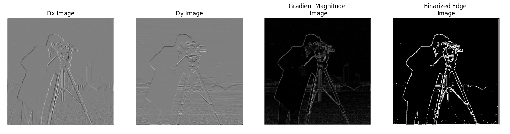
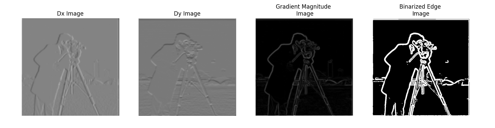
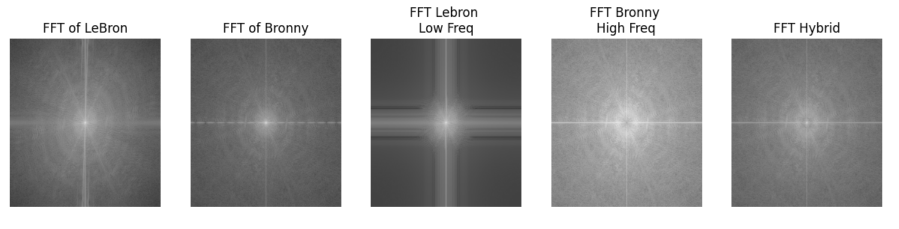

Original Cameraman Image

In this section, I implemented convolutions on a selfie using different approaches: a naive 4 for-loop implementation, a 2 for-loop vectorized approach, and scipy's highly optimized convolve2d.
The time taken for each approach demonstrates the impact of vectorization: the 4 for-loop version took 153.81 seconds, the 2 for-loop version took 11.59 seconds,
and the convolve2d function took just 0.16 seconds. To maintain the same output size as the input image, I padded the image with zeros based on the kernel size.
The 2 for-loop implementation first adds padding to the image based on the size of the convolutional filter. It then calculates the starting and ending points where the center of the convolutional filter will slide to and from
It then slides it over throughout the x and y of the image (our 2 for loops), and then computes the dot product between filter and image area using np.dot(area.flatten(), filter.flatten())
The 4 for-loop implementation does the same process, but instead of np.dot, it uses 2 more for loops to calculate the dot product between the images
def convolve(image, filter, padding=True, many_loops=False):
w, h = image.shape
fw, fh = filter.shape
f_x_len = int((fw - 1) / 2)
f_y_len = int((fh - 1) / 2)
if padding:
pad_x = fw // 2
pad_y = fh // 2
img_padded = np.pad(image, ((pad_x, pad_x), (pad_y, pad_y)), mode='constant', constant_values=0)
else:
img_padded = image
w, h = img_padded.shape
start_x = f_x_len
end_x = w - f_x_len - 1
start_y = f_y_len
end_y = h - f_y_len - 1
result = np.zeros_like(image, dtype=np.float32)
for i, x in enumerate(range(start_x, end_x + 1)):
for j, y in enumerate(range(start_y, end_y + 1)):
area = img_padded[x-f_x_len:x+f_x_len+1, y-f_y_len:y+f_y_len+1]
if many_loops:
output = 0
for h in range(area.shape[0]):
for k in range(area.shape[1]):
output += area[h][k] * filter[h][k]
output = np.dot(area.flatten(), filter.flatten())
result[i, j] = output
return result
I calculated partial derivatives along the x and y directions by passing over the finite difference filter [1, 0, -1]. You can then produce a gradient magnitude image by taking the square root of the sum of squares of the 2 partial derivative images. Then, to get a binarized edge image, you just make each pixel either black or white based on some tolerance, 0.45 for my solution iirc.
Original Cameraman Image
Result of Finite Difference Filter on Cameraman Image
I compared two procedures for applying Derivative-of-Gaussian filters. In procedure 1, I blurred the original image with a Gaussian, then convolved with Dx and Dy filters to compute the gradient magnitude and binarized edge images. In procedure 2, I first convolved the Gaussian kernel with Dx and Dy to create combined filters, then applied these to the original image. Both methods produced equivalent final results.
Procedure 1: Blurred Cameraman Image

Image sharpening is actually surprisingly easy to implement!
The key idea is by isolating the high frequency components from the image, and adding scaled versions of them back to the image.
You can get the high frequency components by just subtracting the low frequency components from the image itself.
The Low Frequency components are really easy to seperate, you can get them just by convolving a Gaussian Kernel over the image
I also applied sharpening to a selfie of me to demonstrate edge enhancement.
Making hybrid images is surprisingly easy! (Given that the images are aligned using the already given starter code)
All you have to do, is combine the low-pass filtered version of one image, with the high-pass filtered version of another image
The low frequnecy image will become more apparent when viewed from far away, while the high frequency version will be more apparent when close up
FFT of Images

Gaussian and Laplacian stacks are also implemented here.
Gaussian stacks start with an initial image, and then progressively blur it more and more each layer
Laplacian stacks follow the same principle, but subtracting the low frequency portion from the image in each layer
Here's the Laplacian Stacks used to merge the apple and orange images:
To merge images, you also take the laplacian of the mask, using the formula given in the paper:
$$L_S(i, j) = G_R(i, j) \, L_A(i, j) + (1 - G_R(i, j)) \, L_B(i, j)$$


LeBron and Bronny Jr Images Merged